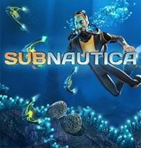

All about games

Subnautica to przygodowa gra akcji na platformę PC, XONE i PS4,
kładąca nacisk na elementy survivalowe oraz eksplorację podwodnych lokacji.
Tytuł powstał w studiu Unknown Worlds (znanym z udanej sieciowej strzelaniny Natural Selection 2) i trafił na komputery osobiste w 2014 roku w ramach Wczesnego Dostępu Steam,
by następnie ukazać się także na konsolach: najpierw Xboksie One, a później PlayStation 4.
Syberia 3 to kolejna część kultowej serii gier przygodowych typu point-and-click,
tworzonych przez studio Microids od 2002 roku.
Produkcja wprowadza do cyklu powiew świeżości nie tylko w postaci zupełnie odrębnej fabuły,
lecz także poprzez wiele zmian i usprawnień w schemacie rozgrywki.
Największą nowością jest osadzenie akcji w trójwymiarowym środowisku – które można swobodnie eksplorować.
Alan Wake stanowi kolejne dzieło ludzi odpowiedzialnych za popularną markę Max Payne.
Całość stworzono w myśl konwencji psychologicznego thrillera akcji,
a podczas developingu wyraźnie inspirowano się kultowym serialem telewizyjnym Davida Lyncha i Marka Frosta o nazwie Twin Peaks (Miasteczko Twin Peaks).
Detroit: Become Human to produkcja z pogranicza gry przygodowej i interaktywnego filmu,
za którą odpowiada francuskie studio Quantic Dream,
znane z takich tytułów jak Fahrenheit, Heavy Rain i Beyond: Dwie Dusze.
Tym razem deweloperzy postanowili rozwinąć pomysł samoświadomych i odczuwających emocje androidów,
który po raz pierwszy pojawił się w demie technologicznym z 2012 roku.